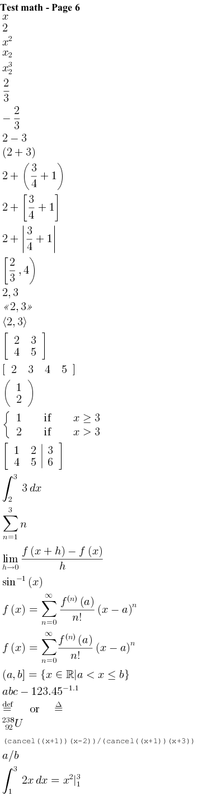

@startcreole math-Page-6
= Test math - Page 6
<math>x</math>
<math>2</math>
<math>x^2</math>
<math>x_2</math>
<math>x_2^3</math>
<math>2/3</math>
<math>-2/3</math>
<math>2-3</math>
<math>(2+3)</math>
<math>2+(3/4+1)</math>
<math>2+[3/4+1]</math>
<math>2+|3/4+1|</math>
<math>[2/3,4)</math>
<math>{:2,3:}</math>
<math><<2,3>></math>
<math>(:2,3:)</math>
<math>[(2,3),(4,5)]</math>
<math>[(2,3,4,5)]</math>
<math>((1),(2))</math>
<math>{(1,if,x ge 3),(2,if,x gt 3):}</math>
<math>[(1,2,|,3),(4,5,|,6)]</math>
<math>int_2^3 3dx</math>
<math>sum_(n=1)^3 n</math>
<math>lim_(h->0)(f(x+h)-f(x))/h</math>
<math>sin^-1(x)</math>
<math>f(x)=sum_(n=0)^oo(f^((n))(a))/(n!)(x-a)^n</math>
<math>f(x)=\sum_{n=0}^\infty\frac{f^{(n)}(a)}{n!}(x-a)^n</math>
<math>(a,b]={x in RR | a < x <= b}</math>
<math>abc-123.45^-1.1</math>
<math>stackrel"def"= or \stackrel{\Delta}{=}</math>
<math>{::}_(\ 92)^238U</math>
<math>(cancel((x+1))(x-2))/(cancel((x+1))(x+3))</math>
<math>a//b</math>
<math>int_1^3 2x dx = x^2|_1^3</math>
@endcreole